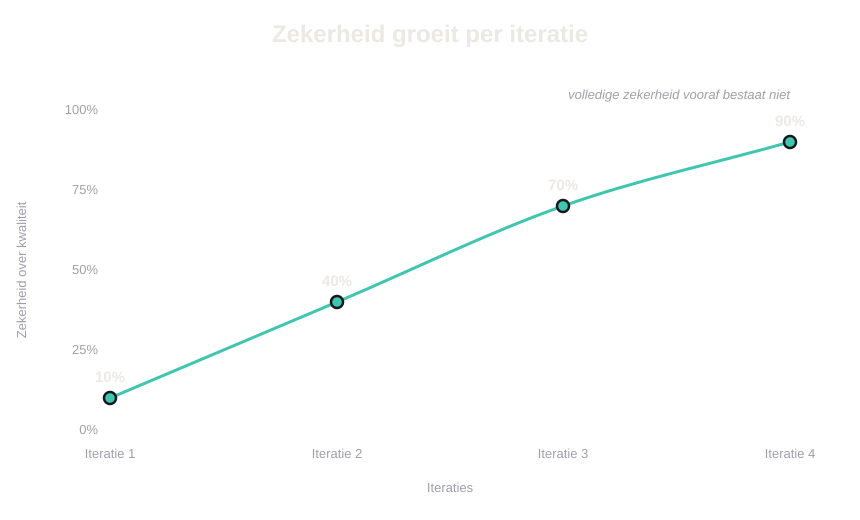

Operating model
Think First,
Ship Fast
Ons werkmodel om met AI problemen op te lossen. Deel 1 beschrijft de triage en de weg die het werk daarna aflegt. Deel 2 is de strategietemplate die de triage voedt en AI de juiste context geeft.
Deel 1 · het triage-model
Aan een product werken kent twee kanten
De kracht van AI zit in het versnellen van onze processen. Vooral bij developers is die versnelling goed zichtbaar. Veel uitvoerend ontwikkelwerk is voorspelbaar en toetsbaar, bijvoorbeeld op consistentie, toegankelijkheid, robuustheid, snelheid en wet- en regelgeving. Daar kan AI goed bij helpen. In een gecontroleerd experiment van GitHub schreven ontwikkelaars met Copilot een taak 55 procent sneller af1, en McKinsey meet voor het schrijven van code een tijdwinst van 35 tot 45 procent2.
Maar productontwikkeling begint vóór het bouwen. We willen zo volledig en goed mogelijk de juiste feature bouwen. Daarvoor bepalen we eerst welk probleem we oplossen, voor wie we dat doen en welke richting daarbij past. Dat werk draait om onzekerheid, onvolledige informatie en botsende belangen. Het vraagt om menselijk oordeel.
Juist in die onzekerheid en onvolledigheid ontstaat veel van de productwaarde. AI kan opties verkennen en patronen aanwijzen, maar mensen kiezen de richting en blijven verantwoordelijk voor de gevolgen.
Dat geldt voor design én development. Voordat er code ligt, zijn er keuzes nodig over architectuur, techniek, schaalbaarheid, beveiliging en onderhoud. Ook die keuzes vragen om goed menselijk oordeel.
Goed onderzocht werk vóór het bouwen bepaalt of we het juiste probleem oplossen en een passende richting kiezen. Dat doen we door:
- Het probleem achter de oorspronkelijke vraag te vinden.
- Het probleem opnieuw te formuleren en helder uit te leggen.
- Te begrijpen hoe gebruikers denken en wat een oplossing met hen doet.
- Scherpe keuzes te maken en een toekomstbeeld neer te zetten.
- Te bepalen wat we bewust niet bouwen.
- Te herkennen wat gebruikers accepteren en wat we daarom niet veranderen.
- Kansen te vinden die gebruikers niet zelf benoemen, maar wel waarderen.
AI kan daarbij helpen en versnellen, maar één ding levert het niet, en dat is een goed oordeel. Dat oordeel vraagt om:
Een term die nu vaak valt, is "kwaliteit". Kwaliteit is lastig te vatten en het is meer dan een mooi scherm.
Zonder een duidelijke richting op kwaliteit valt AI terug op veelvoorkomende patronen. Het resultaat oogt degelijk, maar is vaak voorspelbaar en inwisselbaar. Het gevaar is niet dat AI alles slecht maakt, maar dat het de middelmaat sneller en overtuigender maakt. Onderzoek in Science Advances laat dit zien3. Teksten met AI-hulp worden als creatiever beoordeeld, maar gaan onderling steeds meer op elkaar lijken.
Daarom bepalen wij per project hoeveel denkwerk nodig is voordat we bouwen. Veel onzekerheid, grote gevolgen of een duidelijke kans op onderscheid vragen om een uitgebreide verkenning. Bij weinig onzekerheid en een duidelijke oplossing zetten we AI in om te versnellen.
AI versnelt de uitvoering. Wij zetten ons oordeel en onze verkenning in waar we het verschil maken. Dat is Think First, Ship Fast.
Uitvoering versnelt, oordeel wordt schaars
AI verkort de uitvoering, maar neemt geen verantwoordelijkheid over. Wij bepalen het probleem, kiezen de richting en bewaken de kwaliteit.
AI ondersteunt ons bij onderzoek, alternatieven, prototypes en uitvoering, maar de productbeslissing blijft van ons.
Daarom krijgt niet elk project hetzelfde proces. Een triage aan het begin bepaalt hoeveel Discovery nodig is en wanneer we naar Delivery gaan. De triple diamond blijft onze gedeelde kaart, en de route erdoorheen verschilt per project.
Discovery, of alleen Delivery?
Elk project krijgt eerst een minimale basis. Het team legt vast:
- De Challenge zoals die nu is beschreven.
- Voor wie het probleem bestaat.
- Wat de gebruiker of organisatie wil bereiken.
- Wat we al weten en wat nog onzeker is.
- Belangrijke risico's, beperkingen en voorwaarden.
- De gewenste uitkomst.
Dit is nog geen volledige Discovery. De basis voorkomt dat een project zonder context naar Delivery gaat. De triage vindt direct na de Challenge plaats. UX, PO en development doen dit samen. Het team legt de gekozen route en de onderbouwing vast.
Daarna beantwoorden we één centrale vraag: heeft dit project Discovery nodig, of kunnen we direct naar Delivery? Een project kan later opnieuw door de triage gaan, zodra nieuwe informatie de onzekerheid, impact of risico's vergroot.
Voor we een route kiezen, doen we twee korte controles.
- Is er iets te kiezen? Soms staat al vast dát we iets moeten doen, bijvoorbeeld door wetgeving of een crisis. De keuze gaat dan vooral over de uitvoering. De kwaliteitseisen blijven hetzelfde.
- Is het verantwoord? Kan de oplossing iemand schaden, uitsluiten of verkeerd indelen? Dan kan de uitkomst zijn dat we iets niet bouwen of anders oplossen. Dat is een besluit over verantwoordelijkheid, niet alleen over UX.
De keuze rust vooral op drie signalen:
- Onzekerheid. Begrijpen we het probleem, de gebruiker en de mogelijke oplossing goed genoeg?
- Impact. Hoe groot en herstelbaar zijn de gevolgen van een verkeerde keuze?
- Onderscheid. Kan een goede oplossing ons herkenbaar maken, of voldoet een bestaand patroon?
→ Discovery-route
- Het probleem is onduidelijk of de opdracht mist belangrijke informatie
- De gevolgen voor gebruikers zijn groot of moeilijk terug te draaien
- De gebruiker bevindt zich in een kwetsbare situatie, ook als het werk eenvoudig lijkt
- Een goede oplossing kan ons duidelijk onderscheiden
- Belangrijke bronnen ontbreken of spreken elkaar tegen
→ Delivery-route
- Het gaat om operationeel werk, zoals instellingen, inloggen of een standaard betaalstap
- Er bestaat al een passend voorbeeld of bewezen patroon
- De gevolgen van een verkeerde keuze zijn beperkt en herstelbaar
- De oplossing is duidelijk genoeg om te bouwen
- Goed genoeg is hier daadwerkelijk goed genoeg
Een betaalherinnering voor een gezin met geldzorgen kan bijvoorbeeld eenvoudig lijken. De mogelijke impact maakt toch Discovery nodig.
Deze signalen vormen geen automatische scorekaart. Meerdere signalen versterken de reden voor Discovery. Eén groot veiligheidsrisico of één moeilijk herstelbaar gevolg kan al voldoende zijn.
De triage is geen gevoel alleen. We onderbouwen haar met een korte strategie. Die beschrijft wat goed is voor onze gebruikers en bevat principes waaraan we beslissingen toetsen. Zo gebruikt het hele team dezelfde meetlat, en wordt "alleen Delivery" of "dit bouwen we niet" een uitlegbare keuze. De template staat in deel 2.
Eén poort, twee routes
Het diagram toont drie fasen, namelijk Discovery & strategie, Experience design en Engineering & infrastructuur. Ze overlappen elkaar, en in de overlap van de laatste twee ontstaat het codeprototype.
De triage kiest de route door die fasen heen. De Discovery-route loopt door alle drie. De Delivery-route slaat de eerste over en begint bij het bouwen. Hieronder staat wat elke route van ons vraagt.
Wij leiden · AI in de lus · de volle double-diamond
De volle double-diamond: eerst breed verkennen, dan bewust kiezen. Voor onzekerheid, grote impact of kans op onderscheid. Wij bepalen wat het echte probleem is, welke richting klopt en welke keuzes verantwoord zijn.
AI helpt mee
- AI zoekt patronen in bestaande informatie
- AI maakt verschillende richtingen zichtbaar
- AI helpt om aannames en tegenargumenten te vinden
- AI maakt concepten waarop we kunnen reageren
- AI helpt om informatie te ordenen en samen te vatten
We leveren een besluit op, geen scherm
- Dit is het echte probleem, en waardoor we dat weten
- Dit bouwen we wel, en dit bewust niet
- Dit lost het op, en waarom we hiervoor kiezen
- Dit blijft onzeker en vraagt na de bouw om controle
Een patroon uit AI is een aanwijzing, geen bewijs. Conclusies blijven herleidbaar naar de bron.
AI leidt · wij bewaken · fast-prototyping
Niet door de volledige double diamond als de richting al duidelijk is. AI helpt om snel iets werkends te maken, mensen bepalen, controleren en dragen de verantwoordelijkheid. Maak zo vroeg mogelijk een werkende versie en toets daarmee gedrag, inhoud en technische haalbaarheid. Gebruik vanaf het begin realistische data en inhoud: een layout die in Figma klopt, kan alsnog breken zodra er echte inhoud in staat.
Wij controleren
- Uitzonderlijke situaties
- Samenhang met bestaande patronen
- Toegankelijkheid
- Teksten en interacties
- Technische en inhoudelijke risico's
- Patroonwijzigingen die we moeten vastleggen
We leveren op
- Een werkend prototype dat laat zien wat de oplossing doet en hoe die werkt
- Een korte overdracht, omdat het prototype de belangrijkste beslissingen al zichtbaar maakt
- Vastgelegde wijzigingen in patronen, componenten of richtlijnen
Prototypen in code hoort bij Delivery, niet bij Discovery. We gebruiken code om een gekozen oplossing te toetsen voordat development die verder uitwerkt. Het doel is een prototype dat grotendeels bruikbaar is als productiebasis, zodat een developer erop kan voortbouwen. Dat vraagt om op code gebaseerde tooling en aansluiting op de echte productomgeving, niet om losse wegwerp-HTML.
Onderzoek snel houden
Niet al het werk doorloopt zelf de triage. Doorlopend onderzoek, het design system en lessen uit experimenten leveren juist input voor nieuwe keuzes.
Als Delivery sneller wordt, kan onderzoek de nieuwe vertraging worden. We voorkomen dat niet door ieder onderzoek af te raffelen, maar door onderzoek doorlopend te organiseren, per vraag de juiste diepgang te kiezen en AI te gebruiken voor het ordenen van informatie.
Werk doorlopend
Bouw één centrale inzichtenbibliotheek die actueel blijft, met bij elk inzicht de bron, datum, context en passende tags. Zo begint Discovery niet steeds vanaf nul, en AI helpt om snel relevante inzichten terug te vinden.
Bepaal de diepgang per vraag
Niet iedere Discovery vraagt om nieuw veldwerk. Begin bij wat er al is, zoals de inzichtenbibliotheek, tickets van de servicedesk, Productboard en gebruiksdata. Plan pas nieuwe interviews als een belangrijke onzekerheid blijft bestaan.
Laat AI ordenen
Groeperen, vergelijken en patronen vinden kost tijd, en dat kan AI versnellen. Wij controleren de bronnen, letten op uitzonderingen en geven betekenis aan de uitkomst.
Een AI-synthese is een werkhypothese, geen feit. We toetsen belangrijke patronen aan het bronmateriaal en letten bewust op minder voorkomende of tegenstrijdige signalen.
Sneller onderzoek mag nooit betekenen dat we contact met gebruikers vervangen door aannames. Synthetische persona's, door AI gemaakte gebruikersprofielen, kunnen helpen om onderzoeksvragen aan te scherpen. Ze vervangen echte gebruikers niet.
De kwaliteitslat in Delivery
In Delivery helpt AI bij het maken. Wij bewaken de kwaliteit en nemen het besluit. Elke oplevering doorloopt dezelfde checklist voordat die naar development of productie gaat.
Uit de Stack Overflow-enquête van 2024 blijkt waarom die controle nodig is: 76 procent van de ontwikkelaars gebruikt AI, maar slechts 43 procent vertrouwt op de juistheid ervan, en bijna de helft vindt AI zwak bij complexe taken6.
Gebruik de checklist al bij de eerste versie. Zo zijn de kwaliteitseisen vanaf het begin onderdeel van de opdracht aan AI.
Een oplevering is pas klaar als alle punten zijn afgevinkt
Mensen blijven verantwoordelijk voor het besluit en de gevolgen. Menselijke controle is daarom geen laatste vinkje, maar onderdeel van het hele proces.
UX beoordeelt de gebruikerservaring en productkwaliteit. Development blijft verantwoordelijk voor de juistheid, veiligheid en onderhoudbaarheid van de code. AI draagt zelf geen verantwoordelijkheid.
Werk dat niet aan de kwaliteitslat voldoet, gaat terug, of we leggen de afwijking duidelijk vast. We houden ook bij waar AI steeds tekortschiet. Die patronen verwerken we in de instructies, context en het design system. Zo neemt de kwaliteit van volgende opleveringen toe.
Sneller leveren, vaker itereren
Sneller leveren mag, maar niet met de belofte dat het in één keer klopt. Wie sneller levert, levert minder volledig, dus koppelen we snelheid aan iteratie: we zetten iets neer, meten, en verbeteren in een volgende ronde.
Elke iteratie verhoogt de zekerheid over de kwaliteit. De eerste versie geeft misschien tien procent zekerheid, na een paar rondes zit je een stuk hoger. Zo is snelheid geen risico, maar een manier om sneller te leren.

Dat is ook ons verhaal naar de organisatie. We gaan sneller leveren, op voorwaarde dat we meerdere iteraties doen. Honderd procent zekerheid vooraf bestond toch niet, dat was schijnzekerheid: echte zekerheid komt pas als mensen het gebruiken.
Het DORA-rapport van Google uit 2024 toont de keerzijde van ongecontroleerde snelheid: bij 25 procent meer AI-gebruik daalde de stabiliteit van releases met ruim 7 procent, terwijl driekwart van de ontwikkelaars zich juist productiever voelde4. Fin van Intercom laat zien dat het ook goed kan gaan: ze verdubbelden hun producttempo en gingen 39 procent sneller van idee naar productie. De codekwaliteit zakte eerst toen AI meer ging schrijven, en kroop daarna weer omhoog toen ze er strak op stuurden5.
Werk komt terug bij de triage
Wat een project oplevert, levert input voor het volgende werk. De uitkomst, zoals data, servicetickets en gedrag, komt terug bij de triage. Zo bepaalt die waar we daarna aandacht aan geven. Meet daarbij wat er echt veranderde, zoals een sneller opgelost probleem of een taak die beter lukt, en niet hoeveel AI je hebt ingezet.
De outcome vertelt ons ook of de gekozen route klopte. Nieuwe informatie kan laten zien dat meer Discovery nodig is. Een duidelijk patroon kan juist betekenen dat een volgende verbetering direct naar Delivery kan.
De triple diamond blijft onze gedeelde kaart. De vier mijlpalen (Challenge, Problem statement, Solution en Outcome) blijven staan. De triage bepaalt de route en hoeveel werk er tussen deze mijlpalen nodig is:
- De triage komt direct na Challenge
- In Discovery gaan we van Challenge naar Problem statement en daarna naar Solution, eerst breed verkennen en dan een richting kiezen
- In Delivery starten we bij Solution, bouwen en controleren, en gaan daarna naar Outcome
- Operationeel werk slaat de uitgebreide Discovery over en gaat na Challenge bijna direct naar Delivery
- Als nieuwe informatie de onzekerheid of impact groter maakt, gaat het project opnieuw door de triage
Challenge, Problem statement, Solution en Outcome blijven de gedeelde taal waarmee we afstemmen met PO, dev en stakeholders.
Werk komt uit twee richtingen. De PO brengt werk in vanuit de backlog, en UX brengt kansen in vanuit onderzoek, analyse en eigen observaties: een goed idee hoeft niet te wachten tot iemand erom vraagt. Grote vraagstukken die meerdere kanalen of schermen raken, knippen we eerst op in behapbare delen. Ook stoppen, uitfaseren of verwijderen is werk, vooral de uitvoering en communicatie vragen dan om een bewuste keuze.
Loslaten en bewaken
Loslaten
- Hi-fi-schermen als belangrijkste resultaat
- Zware, statische overdrachten
- Deliverables die alleen voor mensen leesbaar zijn
- Het idee dat elke klus hetzelfde proces doorloopt
- Het idee dat snelheid belangrijker is dan een goede keuze
Bewaken
- Meerdere oplossingsrichtingen verkennen in Discovery
- De kwaliteitseisen in Delivery
- Besluiten met een duidelijke onderbouwing
- Menselijke verantwoordelijkheid voor richting, kwaliteit en gevolgen
- Eerlijk beoordelen welke route een project verdient
- Bewust ruimte voor handwerk en originaliteit, ook als dat trager is
Wat dit van ieder van ons vraagt
- Eerlijk kiezen. Niet ieder project heeft Discovery nodig. Tegelijk mag geen project zonder beoordeling naar Delivery. Dat vraagt om ervaring, een goede afweging en de moed om operationeel werk niet groter te maken dan nodig.
- Een technische en AI-basis. Je moet met AI kunnen prototypen en op hoofdlijnen begrijpen wat er in de code gebeurt. Je hoeft geen engineer te worden, onze kern blijft strategisch, conceptueel en creatief. De één gaat dieper in code, de ander in vakmanschap en strategie.
- Bewust alternatieven verkennen. AI levert in seconden een aannemelijke oplossing, waardoor we gemakkelijk te vroeg kiezen. Verken daarom meerdere richtingen voordat je een besluit neemt.
- Accepteren dat UX niet de enige maker is. PO en development kunnen ook schermen en prototypes maken. UX bewaakt daarom de kwaliteit van het geheel. Onze waarde zit niet alleen in pixels.
- Vlot schakelen. In Discovery gebruik je AI om te verkennen en uit te dagen. In Delivery gebruik je AI om te maken en controleer je de uitkomst. Je moet herkennen welke houding op welk moment nodig is.
- Ervaring doorgeven. Dit model leunt sterk op oordeel. Junioren herkennen nog niet altijd waar een interface wringt of waarom een interactie wel of niet werkt. Koppel junioren aan senioren en geef ze ruimte om breed te verkennen. Zo bouwen ze ervaring en smaak op.
Onze deliverables zijn ook input voor AI
Onze deliverables zijn nu ook invoer voor AI8. Tot nu toe schreven we ze voor mensen. Persona's, journey maps, onderzoeksrapporten en wireframes met toelichting hielpen collega's om de context te begrijpen en keuzes te maken. Nu AI steeds vaker meebouwt, leest een model dezelfde stukken.
Dan moet de kennis onder het ontwerp expliciet zijn. Een stockfoto in een persona draagt weinig bruikbare context over. De regel "Gebruikers haken af als we vragen om informatie die ze niet bij de hand hebben" doet dat wel. AI kan daar tijdens het maken rekening mee houden.
FortyTwo is de plek om die kennis te bewaren, want ons design system is al machineleesbaar. Tokens en componentregels staan in code, dus AI leest ze nu al. Leggen we onderzoeksinzichten, interactieafspraken, onze begrippenlijst en relevante gebruikerscontext ergens anders vast, dan vindt een model ze niet. Google Labs werkte hetzelfde principe uit in de open specificatie DESIGN.md9, een bestand dat machineleesbare designtokens combineert met uitleg over de bedoeling en toepassing ervan.
Dit vraagt doorlopend onderhoud. De kennis verandert mee met het product en met wat AI aflevert.
Of het werkt, zie je aan wat AI ermee maakt. Haalt dat werk de kwaliteitslat, dan is de kennis eronder goed genoeg.
Twee praktijken die hierbij horen
Bewijs boven mening
Probeer je eigen oplossing eerst te weerleggen voordat je die verdedigt. Neem naar reviews en gesprekken met stakeholders een prototype mee dat mensen zelf kunnen verkennen, en gebruik het om samen vragen te beantwoorden en bewijs te verzamelen.
Kwaliteit in onze tools
Als PO en development geloofwaardige schermen kunnen maken, is UX niet langer de enige maker. Zorg dan dat iedereen vanuit dezelfde kwaliteitsbasis begint, zoals hierboven beschreven. De modellen zijn slim genoeg, het schaarse is dat wij ze onze product- en ontwerpcontext voeren. Een leesbaar design system en een heldere strategie zijn daarom veel waard.
Dit werkt alleen als de organisatie meebeweegt. Als we op een nieuwe manier werken maar op oude resultaten worden beoordeeld, blijven losse initiatieven ontstaan. Beoordeel teams daarom op kwaliteit, onderbouwde keuzes, leervermogen en gebruikersresultaten, niet op het aantal schermen of documenten.
De strategie die de triage voedt
De triage is zo sterk als de strategie eronder. Een korte strategietemplate legt in een paar principes vast wat "goed" is voor onze gebruikers, en die kun je tegen elke beslissing houden. Die principes maken de keuzes aan de poort verdedigbaar en geven AI de context om binnen te werken.
Eén poort, twee routes, en weer terug
Meenemen en hergebruiken
Het model en de twee werkdocumenten, klaar om te downloaden of te kopiëren. Plak ze in je project, je repo of de context van je AI-tool.
Het triage-model
Het diagram als schaalbare SVG, voor in een presentatie of document.
Definition of Done
De vaste kwaliteitslat die elke Delivery-oplevering passeert. Komt live uit de kaarten in sectie 05.
Strategietemplate
De strategie die onder de triage ligt en AI de context geeft. De in te vullen template uit deel 2.
Bronnen
- GitHub, The Impact of AI on Developer Productivity: Evidence from GitHub Copilot (2023). arxiv.org/abs/2302.06590
- McKinsey, Unleashing developer productivity with generative AI (2023). mckinsey.com
- Doshi en Hauser, Generative AI enhances individual creativity but reduces the collective diversity of novel content, Science Advances (2024). science.org
- Google DORA, Accelerate State of DevOps Report 2024 (2024). dora.dev
- Fin (Intercom), 2× – nine months later (2026). ideas.fin.ai
- Stack Overflow, 2024 Developer Survey: AI (2024). survey.stackoverflow.co
- Katie Dill (Stripe), Craft and beauty: the business value of form in function, Stripe Sessions (2024). stripe.com
- Tony Alicea, UX-Context Design: Using UX Knowledge to Inform AI-Generated Design, Nielsen Norman Group (2026). nngroup.com
- Google Labs, DESIGN.md (2026). github.com/google-labs-code/design.md